Agent-centric-real-to-sim · 归档于 2026-11-05
ReconEffects
Measuring Asset and Scene Reconstruction Effects in Real-to-Sim Robot Evaluation
arXivPDF CodeReal trials (Robocurve)
归档到 Agent-centric real-to-sim：用第三方打分的真机 trial，量一整套重建做法让 sim 分靠近真机分多少。它量的是整包，没有拆出哪一部分起作用（§6）。第二相关 Sim-robot-learning（policy 的仿真评测）。
TL;DR
- Problem
- 各家 twin 都报 r ≈ 0.9，但每个 setup 只建一份，所以没人知道把物体建得更好，sim 分会不会更贴近真机分。
- Idea
- 同一批照片和同一段视频建两个仿真：authored（Kaedim 管线）和 default（TRELLIS + PhysX 默认 + 2D splat）。机器人、相机、控制全部锁死，都对同一批 200 次第三方打分的真机 trial。
- Result
- 平均分差 6.97 vs 17.54 pp，配对差 +10.56 [+5.03, +17.11]（Table 4）。r 0.90 vs 0.51 的差值 CI 含 0，分不开两版。六项差异一起变，所以效果只能归给整包。
Problem
大家都报 r ≈ 0.9，但没人把同一个 setup 建两遍，所以不知道物体建得好不好有多大影响
Running example · 后面每个 stage 都跟着它走
Stack bowls × MolmoAct2：任务串 stack the bowls on the sides on top of the center bowl，桌上 3 个相同的碗，满分 50（Table 3）；真机 20 次均值 29.75（95% CI 23.50 to 35.75，Table 5）。输入只有物体照片和一段手持视频 → 想要：同一 policy 在 sim 里打出差不多的分，trial 也停在差不多的 stage。
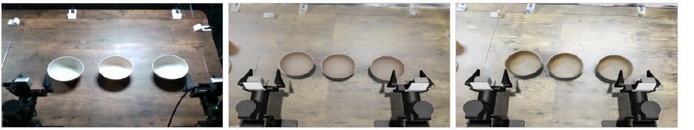
flowchart TD IN["例子输入
碗的照片 + 手持视频
真机 29.75 / 50"]:::example IN --> A1["Default recipe
TRELLIS + 手填 0.15 m
PhysX 默认"] A1 --> AX["凸包填满碗腔，叠不进去
sim 16.75 / 50
到 40 分 0%，真机 40%"]:::gap IN --> B1["只动别的因素
PolaRiS：渲染四档
Wang et al.：换物体种类"] B1 --> BX["碗的建法没变过
这个问题没测"]:::gap IN --> C1["只建一份
SimFoundry：全自动
SIMPLER：定义两种 gap"] C1 --> CX["只有总分，无法归因
r = 0.911，没有对照"]:::gap
第 1 条：碗腔被填满是 Fig. 1 和 §6 写明的；"所以叠不进去"是我的推断，论文只报告结果（Table 5、Fig. 4），default 同时还换了质量、摩擦、纹理和场景。后两条没在这个例子上跑过：论文的批评是"没测"（§1、§2），不是"测了失败"。
根本问题：每个研究只建一份 twin，报它和真机多一致，没有同一 setup 的对照。 这篇的切入点：一个工位建两遍，只换物体和场景，其余用 gate 锁死，对同一批第三方真机 trial 打分。
Related work
| 相关工作 | 解决什么 | 怎么解决 | 和本文的区别 |
|---|---|---|---|
| 同一问题 · 别的解法 | |||
| PolaRiS default 版的配方来源 | 视频扫描 → 工位 twin，r 平均 0.9、最差 0.81 | Gaussian splat 场景，多视角 TRELLIS 物体，物理留默认 | 消融只动渲染四档 → 本文换物体的几何、尺度、物理和场景 |
| SimFoundry 最接近本文管线 | RGB 视频 → 自动场景，r = 0.911、MMRV 0.018 | 分割、image-to-3D、对齐 RGB-D、CoACD、VLM 给质量摩擦 | 也写物理，但只报完整输出 → 本文建两遍，量这一步的差值 |
| Wang et al. 9 任务 × 5 policy | 提高 sim-real 相关，并要求复现失败模式 | 唯一的物体实验：把 banana 换成另外 5 种物品 | 换的是物体种类 → 本文固定物体，换它的建法 |
| SIMPLER 这条线的起点 | 用仿真评 policy，看排序是否保持 | 报 sim-real 相关，提出 visual / control gap 和 MMRV | gap 只分这两类 → 本文把物体重建单独当变量 |
| 相似做法 · 别的问题 | |||
| 物理属性估计 Phys2Real、TwinAligner | 估准质心、质量、摩擦 | VLM 先验 + 交互辨识；对真实轨迹优化 | 只改进估计，不量 sim-real 一致性 → 本文量一致性，但物理值没校准 |
| 可变形物体 Zhang et al.、PhysTwin | 绳子等的 sim 评测 | 去掉 per-spring 刚度优化，MMRV 0.174 → 0.248 | 此前唯一的 fidelity 数字，只动一个量 → 本文换刚体的整包 |
来源：论文 §1、§2 Related work 和 §6 的对比，未另行检索。
Level 1 · Big picture
一份输入建两遍：只换 objects 和 scene，其余锁死，用同一批真机 trial 当尺子
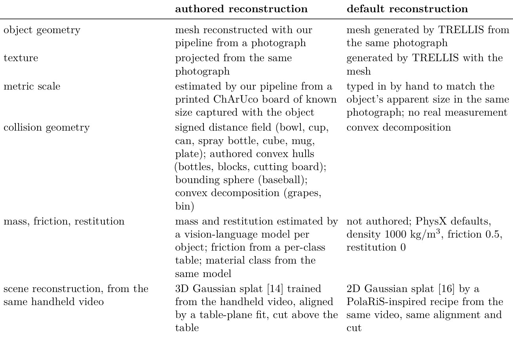
怎么读这张表（六行，论文归成三个轴）
- object geometry、texture：authored 用 Kaedim 管线（projectsim）从一张照片重建 mesh，再把同一张照片投上去当纹理。default 把同一张照片送进 TRELLIS，mesh 和纹理都是生成的。
- metric scale：authored 用同框拍的 ChArUco 板估尺度。default 手填，参考照片里的大小和日常经验，没有测量。
- collision geometry：authored 按物体选：7 种用 SDF，bottles / blocks / cutting board 用 authored convex hull，baseball 用 bounding sphere，grapes / bin 用 convex decomposition。default 全部 convex decomposition。
- mass, friction, restitution：authored 由 VLM 看 mesh 的渲染图给 material class、mass、restitution，friction 按 class 查表。default 什么也不写，用 PhysX 默认值。注意 authored 不等于 measured：这些值没有和实物比过。
- scene reconstruction：同一段手持视频，3D Gaussian splat 对 COLMAP + 2D Gaussian splat，对齐和裁切完全相同。
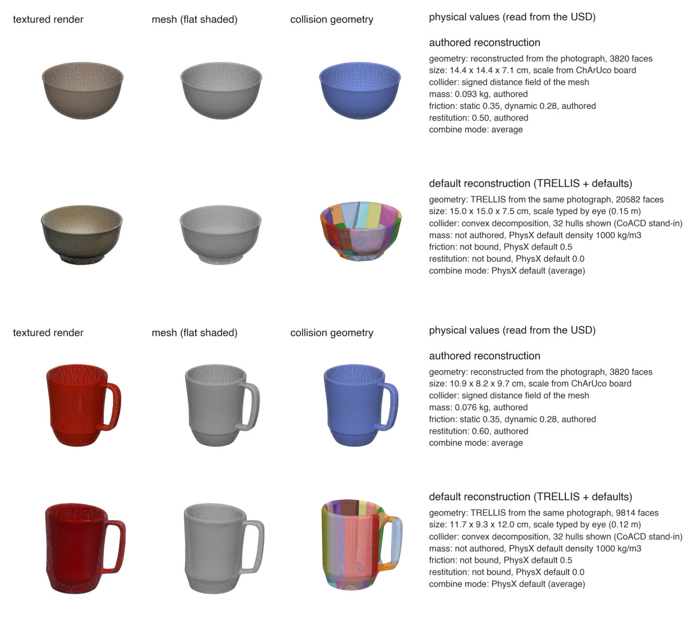
怎么读这张图
- 第 3 列 "collision geometry"：蓝色是 SDF，贴着 mesh，碗腔是空的。彩色是 32 个凸包，把碗腔和杯腔填满。图注说这是 CoACD 的替身，真正的分解由 PhysX 在 load 时算。
- "physical values"，碗：尺寸 14.4 × 14.4 × 7.1 cm vs 15.0 × 15.0 × 7.5 cm；质量 0.093 kg vs 未写入（1000 kg/m³ × 碰撞体体积）；friction 0.35 / 0.28 vs 0.5；restitution 0.50 vs 0.0。
- "size"，杯子：差得更多，10.9 × 8.2 × 9.7 cm vs 11.7 × 9.3 × 12.0 cm，default 高出 24%（我算的）。真实尺寸论文没给，所以两版谁更准只能靠 ChArUco 的依据推断。
- 我的粗算：论文没报 default 的碗有多重。把填满的碗当半径 7.5 cm 的半球，约 0.9 kg，约 authored 的 9 倍。这是上限式的估算，不是论文数字。
flowchart TD I["同一份输入
碗的照片 + 手持视频"]:::example I --> A["authored
14.4 cm · SDF · 0.093 kg"]:::win I --> D["default
15.0 cm · 凸包 · 1000 kg/m³"] A --> H["同一 harness，各 20 trial
authored 25.75 / default 16.75"] D --> H H --> C["对同一批真机 trial
真机 29.75 / 50"]
Level 2 · Stages
这是一项测量，不是新方法：5 个 stage，定尺子、建两遍、跑、打分、比较
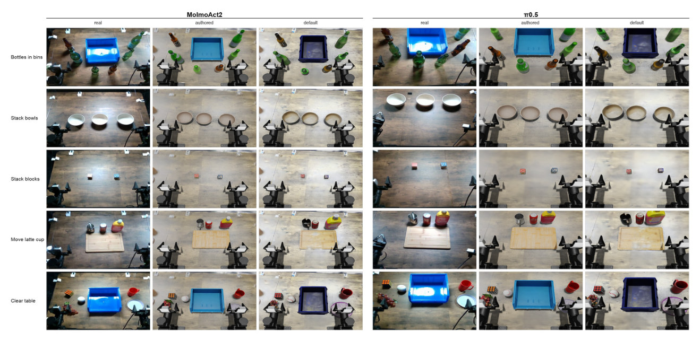
怎么读这张图
- 左右两半：MolmoAct2 和 π0.5。top camera 高度不同（0.88 m 和 0.72 m），所以取景不同。
- 行：5 个任务。第 2 行就是例子。
- 每半三列 real / authored / default：物体摆放两版相同，取自某次真机 trial 的首帧。
- 我的观察：两版都比真桌面亮，例子里的白碗在两版里都是棕色，所以 visual gap 两边都还在。default 还多一处：bin 变深蓝紫，latte cup 变黑（见 E2）。
flowchart TD S1["1 · 定真机尺子
20 trial，均值 29.75"] --> S2["2 · 建两遍
SDF 碗 vs 32 凸包碗"] S2 --> S3["3 · 跑 + 配置门
25.75 / 16.75，过 gate"] S3 --> S4["4 · 打分
同一 rubric，规则打"] S4 --> S5["5 · 比较
E 差 8.0 vs 26.0"]:::win click S1 href "#stage-1" click S2 href "#stage-2" click S3 href "#stage-3" click S4 href "#stage-4" click S5 href "#stage-5"
点击 stage 展开 Level 3 细节。
Level 3 · Details
每个 stage 的细节
Stage 1 定真机尺子（real reference） 5 任务 × 2 policy → 200 次第三方打分的真机 trial
- Why：两版必须对同一把尺子，这把尺子最好不是作者自己打的。
- 工位：bimanual I2RT YAM，21 个物体，16 种。
- 任务：bottles in bin、stack bowls、stack blocks、move latte cup、clear table。两个 stack 是 evaluator 的标准任务，另三个为本研究指定（latte 来自 PolaRiS，clear table 来自 SimFoundry）。
- Policy：π0.5（top camera 0.72 m）、MolmoAct2（0.88 m），sim 各自匹配。
- 谁做的：Robocurve 跑、写 rubric、打分，保留 real 侧的方法控制权。Kaedim 指定 3 个任务、商定 policy、付钱（§3、Funding）。
flowchart LR a["5 任务 × 2 policy
stack bowls × MolmoAct2"] --> b["10 cells × 20 trial
Robocurve 跑"] b --> c["per-trial 分
均值 29.75 / 50"]
Running example 在这一步
真机 20 次，均值 29.75，95% CI 23.50 to 35.75（Table 5）。Robocurve 的页面记为 rig-6，20 次里 3 次 success、10 次 partial、7 次 fail（该页数字，论文没报）。
Stage 2 建两遍（authored / default） 同一批照片 + 同一段视频 → 两套物体 + 两个 splat
- Why：这是实验里唯一的自变量。两版差异见 Table 1。
- Default 是作者自建的：按 PolaRiS 公开配方，所以叫 "PolaRiS-inspired"，不是 PolaRiS 的官方资产。一物一张照片，PolaRiS 用多张。
- 场景对齐（两版共用）：地面最大平面 → 转水平；桌面高度带 → 0.807 m / splat unit；手动放到实测 0.750 m 桌高。
- 裁切：桌面以上全切掉，否则物体会出现两次（splat 里一次，simulator 里一次）。default splat 注册到 authored 上，共用坐标和切面。
- 摆放（两版相同）：每 cell 一个固定布局，取自某次真机首帧；每 trial 最多 1 cm jitter。真机摆放变化更大，所以 sim 和 real 只按 cell 配对，不按 trial 配对。
flowchart TD p["物体照片
碗"] --> a["Kaedim 管线
ChArUco + VLM 物理"]:::win p --> b["TRELLIS
手填尺度 + PhysX 默认"] v["手持视频
同一段"] --> c["3DGS"]:::win v --> d["COLMAP + 2DGS"] c --> e["共用对齐和裁切
桌高 0.750 m"] d --> e
Running example 在这一步
同一张碗的照片走两条路：authored 得到 3820 faces、14.4 cm 宽、SDF 碰撞体、0.093 kg；default 得到 20582 faces、15.0 cm 宽、凸包碰撞体（Fig. 1）。三个碗摆在同样的位置，只有 ≤ 1 cm 的 jitter。
Stage 3 跑 + 配置门（config gate） 重建 + policy → 每 cell 20 trial，日志过 gate 才算数
- Why：两版的差不能来自某个跑偏了的设置。
- Harness：4 个输入：robot model、任务及真机分、独立进程里的 policy、一个重建。前三个固定。Isaac Sim 6.0.1，每 cell 20 trial。
- Gate：9 项必须一致：step budget、action chunk、top camera 高度、placement 版本及其 per-policy key、physical rig、gripper collision filter、joint clipping、solver step 数。不符就拒绝并打印原因。
- 抓到过：6 个完整的 default run 相机高度错了，这个缺陷在分数上不留痕。
- 盲区：gate 只看 runner 打印的东西，per-trial 的 placement shift 没有记录。
- 批次规则：一批 = 一个 cell 一套设置的 20 trial。多批过 gate 时，用日志开始时间最新的一批，其余都列在 Table 7（见 E5）。
flowchart LR a["Run
20 trial"] --> b["Config gate
9 项读自日志"] b --> c["通过
取最新一批"] b --> d["拒绝
6 个相机高度错"]:::gap
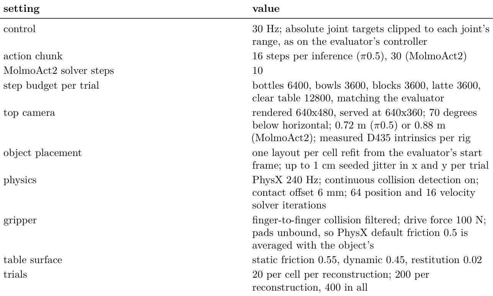
怎么读这张表
- gripper：pad 没绑材质，PhysX 默认 0.5 和物体的值取平均。所以物体 friction 会进抓取：碗的 static 值 authored 为 0.425，default 为 0.5（我算的）。
- top camera：640×480 渲染，640×360 给 policy，下俯 70 度，D435 内参按 rig 实测。相机是量好的，不是这项研究的变量。
- table surface：friction 0.55 / 0.45，restitution 0.02，两版相同。
Running example 在这一步
step budget 3600。authored 有 4 批过 gate，报告的是最新的 25.75；default 只有 1 批，16.75（Table 7）。
Stage 4 打分（rubric） trial → 分阶段的 rubric 分，真机人打，sim 规则打
- Why：分阶段的分比成败更能看出"走到哪一步"。
- 真机：Robocurve 的 graders 按 Table 3 打。
- Sim：由同一 rubric 派生的规则，看物体位姿和夹爪接触。两版用同一套规则，规则随 harness 公开。
- 抽查：作者肉眼看了 30 次 sim trial（每 policy × task 3 次），28 次和规则一致；另 2 次各差一个 stage，方向相反（§6）。
- 残留：规则和人不一致的部分，现在算在重建头上。论文的例子：瓶子刚好低于 upright 阈值。
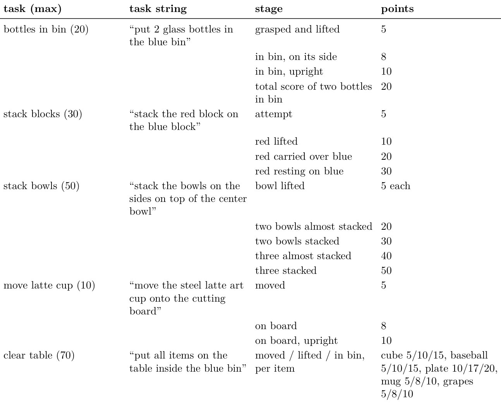
flowchart LR a["真机 trial
grader 打分"] --> c["同一 rubric
满分 50"] b["Sim trial
位姿 + 接触规则"] --> c
Running example 在这一步
每个碗拿起 5 分；两碗 almost stacked 20，stacked 30；三碗 almost stacked 40，stacked 50。真机在这个 cell 里走到过 6 个不同分值：5、10、20、30、40、50（Table 6、Fig. 4）。
Stage 5 比较（四个 measure + bootstrap） 20 + 20 个分 → 每 cell 的差距 → 两版的配对差和 95% CI
- Why：分数接近不等于 trial 走得一样，所以比数值的两个、比 stage 的两个都要。
- 归一化：全部换成任务满分的百分比，不同任务才能平均。
- 配对：每次比较都按 cell 配对，让任务难度的差别抵消。
- 区间：bootstrap percentile，20,000 次重采样，默认 seed 0。
符号表（例子值：stack bowls × MolmoAct2）
| 符号 | 大白话 | 例子里的值 |
|---|---|---|
| c | 一个 cell：一个 task × 一个 policy，共 10 个 | stack bowls × MolmoAct2 |
| x̄c、ȳc | 这个 cell 的 sim 均分、真机均分（百分比） | sim 51.5（authored）/ 33.5（default），真机 59.5 |
| E | score error：sim 和真机均分之差的绝对值，10 个 cell 平均 | 这个 cell 8.0 / 26.0（我算的）；总体 6.97 / 17.54 |
| r | Pearson 相关：10 个 sim 均分对 10 个真机均分，只有整体值 | 总体 0.90 / 0.51 |
| Rc、ρ | 真机在这个 cell 里出现过的非零分值集合；其中一个分值 | {5, 10, 20, 30, 40, 50}；ρ = 30 |
| Pc、P | progress disagreement：每个分值上"达到它的 trial 比例"sim 和真机差多少，先平均 stage，再平均 cell | Pc 7.5 / 25.8（Table 6）；P 15.90 / 24.23 |
| pxc,k、pyc,k | 恰好停在第 k 个 stage 的 sim、真机 trial 比例 | 论文没给逐 cell 的值 |
| Fc、F | failure-stage disagreement：两种"停在哪"分布的 total variation 距离 | F 42.00 / 48.50（只有总体） |
| Dc | 一次重采样里 sim 均分减真机均分；95% 区间含 0 就算 consistent | authored yes，default no（Table 5） |
| dc | default 的差距减 authored 的差距，正数表示 authored 更近 | E 上 26.0 − 8.0 = +18.0（我算的） |
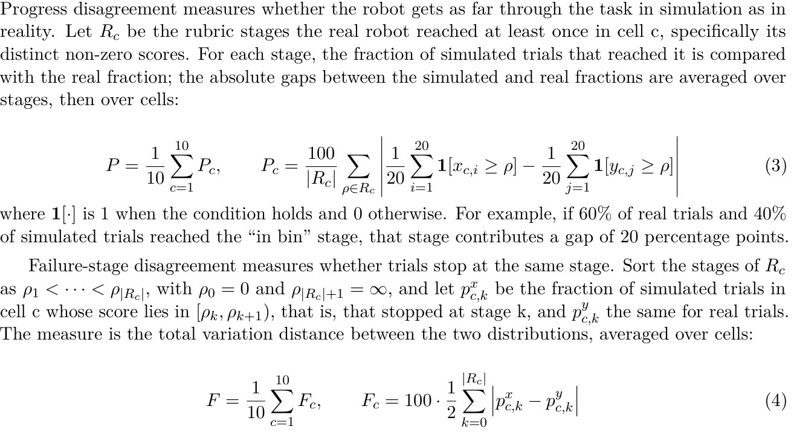
怎么读这两个公式
- Eq. 3，看"走得多远"：对每个分值，数有多少 sim trial 和真机 trial 达到它，比例相减取绝对值，再平均。累积地看。
- Eq. 4，看"停在哪"：把 trial 归到它停下的 stage，比两种分布，差异总量除以 2。不累积，所以数值更大（F 42–48，P 16–24）。
flowchart LR a["每 cell 的差距
E：8.0 / 26.0"] --> b["配对差 d
+18.0"] b --> c["对 10 个 cell bootstrap
总体 +10.56"]
Running example 在这一步
authored 51.5% vs 真机 59.5%，default 33.5%。authored 落在真机的不确定范围内，default 没有。这个 cell 的 margin 是 9.00 rubric 分，是 10 个 cell 里最大的（Table 5）。
Recap：例子覆盖了论文的哪些 idea
| 论文里的 idea | 例子里在哪体现 |
|---|---|
| 同一输入建两遍 | Stage 2：同一张碗的照片走两条路 |
| 六行差异（Table 1） | Level 1：14.4 vs 15.0 cm，SDF vs 凸包，0.093 kg vs 1000 kg/m³，3DGS vs 2DGS |
| 共用的场景对齐和摆放 | Stage 2：0.807 m / splat unit，桌高 0.750 m，≤ 1 cm jitter |
| Config gate | Stage 3：9 项必须一致；6 个相机高度错的 default run 被拒 |
| 规则打分对人打分 | Stage 4：20 / 30 / 40 / 50 的 stack 阶段 |
| 四个 measure、配对 bootstrap | Stage 5 + E1：E 8.0 / 26.0，Pc 7.5 / 25.8 |
| Consistency 检验 | E2：authored yes，default no |
| Stage 上的差别 | E3：到 40 分的比例 40% / 15% / 0% |
| 两版共同的失败 | E4：同一 policy 换到 stack blocks |
| 批次噪声和报告规则 | E5：authored 四批 19.75 到 25.75 |
| Policy 排名为什么不报 | E6：stack bowls 上 P = 0.53，真机分不出先后 |
Results
整包确实让 sim 分更贴近真机，但两版的 r 分不开，各部分的贡献也没测
比的只有一件事：sim 和真机的一致性，不比成功率或速度。顺序同论文：E1 总体差多少 → E2 差在哪些 cell → E3 trial 停在哪 → E4 两版都错的 cell → E5 换一批还成立吗 → E6 能否比 policy 排名。标"我算的"的数字来自论文的表，但不是论文报告的。
E1整包换掉后，sim 和真机的差距缩小多少？§5 · Table 4
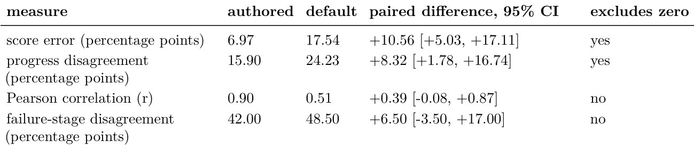
- 说明什么
- 分差缩小 10.56 pp。score error 6.97 vs 17.54，配对差 +10.56 [+5.03, +17.11]；progress 15.90 vs 24.23，+8.32 [+1.78, +16.74]。另两个分不开：r 0.90（0.77 to 0.99）vs 0.51（0.02 to 0.94），差 +0.39 [−0.08, +0.87]；failure-stage 42.00 vs 48.50，+6.50 [−3.50, +17.00]。摘要最先报的 0.90 vs 0.51 恰恰是分不开的那个。
- 在故事里
- 全文主结论。量的是"default 换成 authored"这一整包的效果。
- 指标
- E、P、r、F，定义见 Stage 5。r 越高越好，另三个越低越好；配对差为正表示 authored 更近。
- 怎么评测
- 10 cells × 20 trial × 2 版 = 400 次 sim，对 200 次真机。
- 对照是作者自建的 default，一物一张照片、手填尺度，§6 承认这对 authored 有利。
- 我用 Table 5 重算：E 6.97 / 17.54、r 0.90 / 0.51，对得上。
E2差距集中在哪些 cell？§5 · Table 5 · Fig. 3
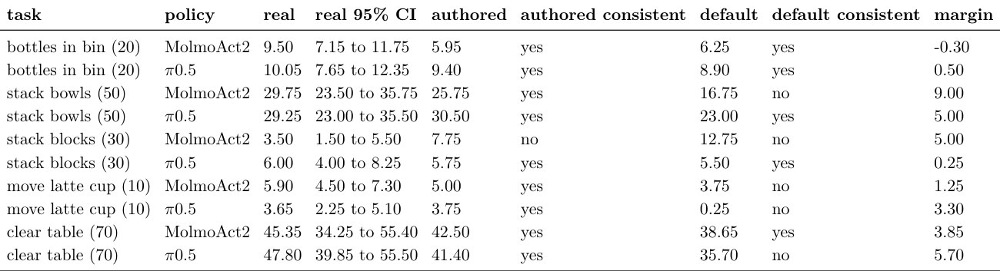
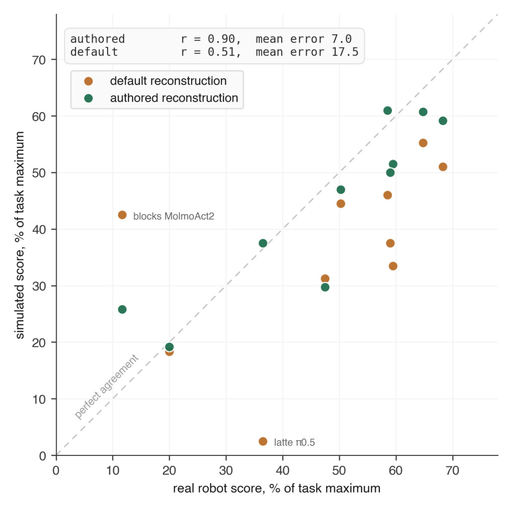
- 说明什么
- authored 在 9/10 cell 更近，consistent 9/10 vs 5/10。3 个 margin ≤ 0.50 分，论文算平局，所以是 7 胜、3 平、0 负。最大 margin：bowls × MolmoAct2 9.00，clear table × π0.5 5.70，bowls × π0.5 和 blocks × MolmoAct2 各 5.00。
- 在故事里
- 说明总体差距不是一两个 cell 撑起来的（对 E 成立，对 r 不成立，见下表）。
- 指标
- consistent = sim 减真机的 95% bootstrap 区间含 0（Eq. 5）。margin = authored 比 default 离真机近多少。
- 怎么评测
- 每 cell 用 Stage 3 规则选出的那一批。
- default 在 9/10 cell 低于真机：平均偏差 −11.37 pp，authored −3.44 pp（我算的）。它的误差主要是系统性低估。
r 的差距靠两个 cell（我用 Table 5 算的，不是论文数字）
| 用哪些 cell | r authored | r default | E authored | E default |
|---|---|---|---|---|
| 全部 10 个 | 0.90 | 0.51 | 6.97 | 17.54 |
| 去掉 blocks × MolmoAct2 | 0.91 | 0.80 | 6.17 | 16.06 |
| 再去掉 latte × π0.5 | 0.92 | 0.85 | 6.82 | 13.82 |
去掉 Fig. 3 标出的两点后 r 几乎追平，E 仍差一倍。所以 E 是更稳的证据，这和 Table 4 的结论一致。
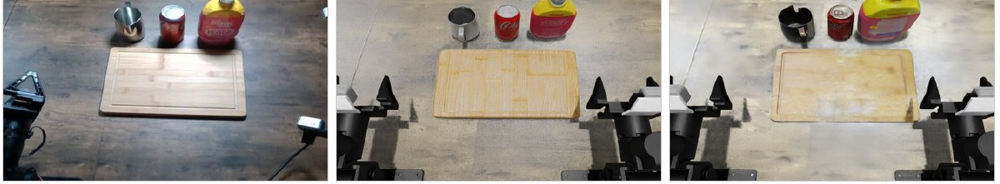
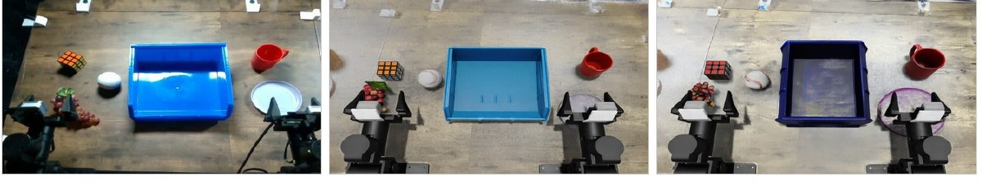
我的观察，论文没讨论：latte × π0.5 是 default 最大的偏离，0.25 / 10 对真机 3.65，算下来 20 次里只有 1 次拿到 5 分。TRELLIS 把杯子生成成黑色，可能是原因之一，但这个 cell 没有单因素实验，物理和碰撞体也同时变了。
E3trial 走到哪一步？§5 · Table 6 · Fig. 4
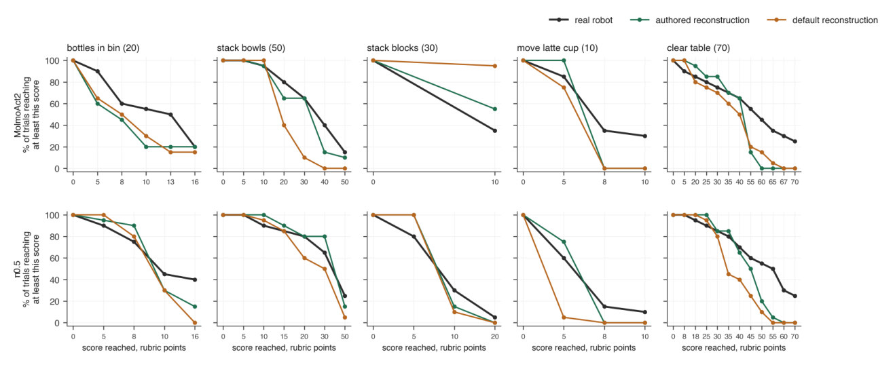
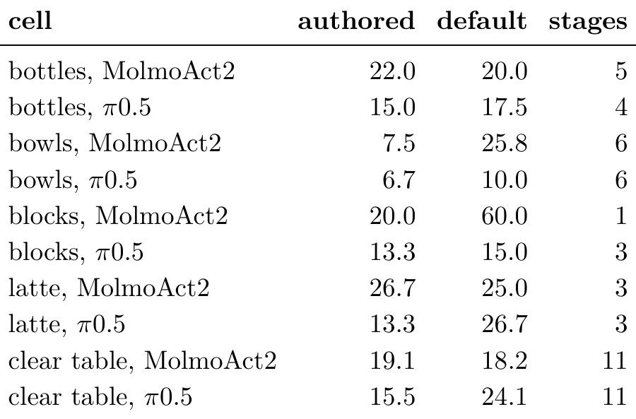
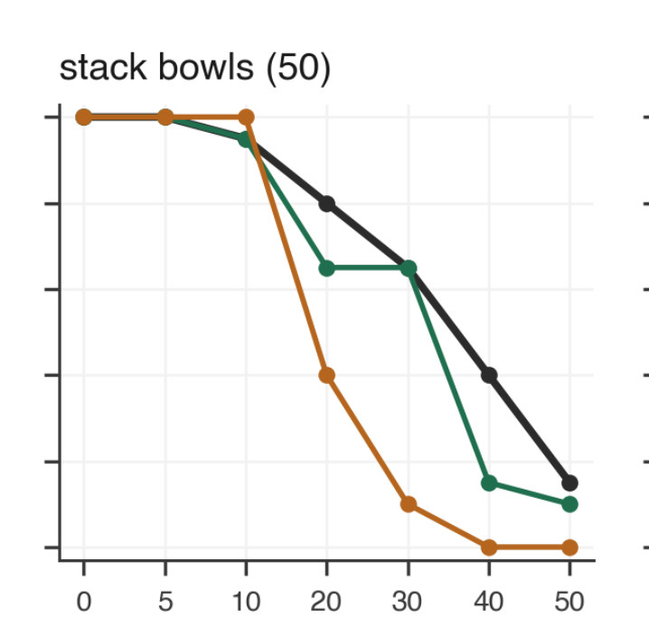
这一格的读图值
| 达到分值 | 5 | 10 | 20 | 30 | 40 | 50 |
|---|---|---|---|---|---|---|
| 真机（黑） | 100% | 95% | 80% | 65% | 40% | 15% |
| authored（绿） | 100% | 95% | 65% | 65% | 15% | 10% |
| default（橙） | 100% | 100% | 40% | 10% | 0% | 0% |
读图值的平均间距是 7.5 和 25.83，正好等于 Table 6，所以读数可信。到 10 分三条线几乎重合，拿起碗这一步没差别；default 从 20 分（两碗 almost stacked）开始掉。这和 Fig. 1 的碗腔被填满吻合，但因果是我的推断。
- 说明什么
- authored 在 7/10 cell 走得更像真机。最大差距 blocks × MolmoAct2 20.0 vs 60.0，bowls × MolmoAct2 7.5 vs 25.8。blocks × MolmoAct2 只有 1 个真机 stage；去掉它，配对差 4.80（0.73 to 9.44），仍不含 0。
- 在故事里
- 说明分数接近不是巧合，过程也更接近。但 failure-stage（E1）分不开，所以这个结论只到累积比例这一层。
- 指标
- Pc：每个分值上 sim 和真机达到比例的平均绝对差（Eq. 3）。
- 怎么评测
- stage 梯子来自真机，所以 sim 走到真机没到过的分值不计入。
- default 在 3 个 cell 上反而更近（bottles × MolmoAct2、latte × MolmoAct2、clear table × MolmoAct2）。
E4同一 policy 换到 stack blocks：两版都错，错在哪？§5 · §6 第 2 条
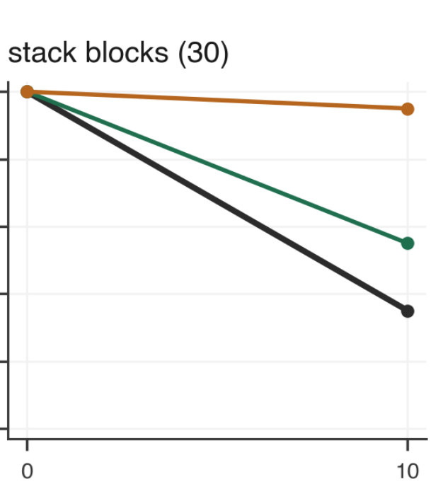
| stack blocks × MolmoAct2 | 均分（满分 30） | 零分 trial | 达到 10 分 |
|---|---|---|---|
| 真机 | 3.50 | 13 / 20 | 35% |
| authored | 7.75 | 0 / 20 | 55% |
| default | 12.75 | 0 / 20 | 95% |
小表由 §6 正文、Table 5 和 Fig. 4 的数字整理。
- 说明什么
- 两版都打高，是唯一一个 authored 不 consistent 的 cell。开发时调过 finger-pad friction 0.8 到 1.4、相机曝光、控制器增益，都没缩小：至少 2 次 trial 的设置里，没有均值低于 5 分的。
- 在故事里
- 说明重建之外还有误差。作者认为最可能是共同的 control gap：两版的臂、policy、控制器相同。这是假设，没有被测试。
- 指标
- 同 Table 5；"attempt" 在 rubric 里值 5 分（Table 3）。
- 怎么评测
- 这个 cell 保留在所有表和图里，没有剔除。
- 我的推算：真机是 13 次 0 分、7 次 10 分，从没给过 5 分。authored 只能是 9 次 5 分、11 次 10 分（9×5 + 11×10 = 155 = 7.75×20）。
- 所以 authored 比真机多出的 4.25 分里，有 2.25 分来自 "attempt" 这一档：把这 9 次记 0，均值 5.50，落在真机 CI 上沿（1.50 to 5.50）。default 记 0 后仍有 12.50，几乎不变。
- 这有两种解释：sim 里 policy 真的每次都动手，或规则比 grader 松。论文的 control gap 只对应前者；后者属于它自己列的第 3 条局限。
E5换一批 20 trial，结论还在吗？App. A · Table 7 · Fig. 5
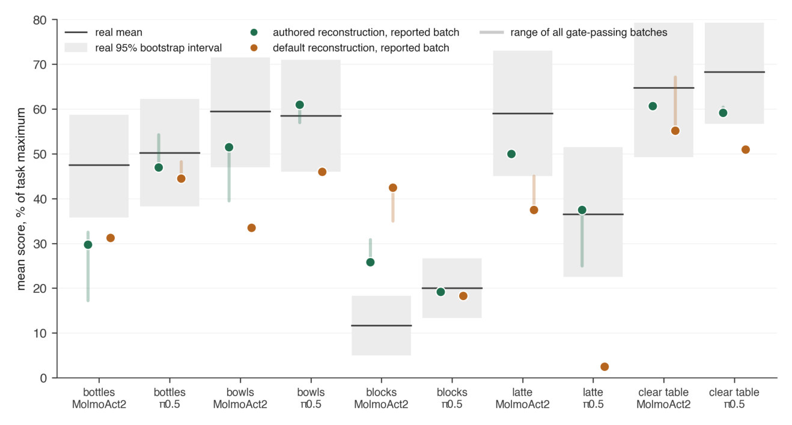
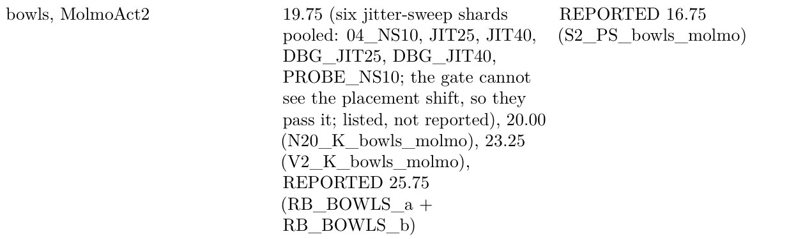
- 说明什么
- 批次噪声和不少 margin 同量级，但 E 的方向没变。同配置批次相差 0.00 到 8.35 分，中位 1.45（13 对）。例子里报告的 25.75 恰好是四批中最高的；换成 19.75，最大的 margin 就从 9.00 变成 3.00（我算的）。
- 在故事里
- 回答"是不是挑了好看的一批"。规则是取最新，不是取最好，所有批次都列出，这点是诚实的。
- 指标
- 一批 = 20 trial 的均分，rubric 分。
- 怎么评测
- authored 共 24 批，default 16 批（我数的），多批的 cell 是 9 对 4，所以两边被抽样的程度不同。
- repo 的
docs/RESULTS.md（不在 PDF 里）：pool 所有过 gate 的 trial，r 0.83 vs 0.56，consistent 7/10 vs 4/10，authored 仍在 9/10 cell 更近。 - 同一文件：bottles × MolmoAct2 authored 的区间是 [−6.95, +0.00]，卡在边界，换 seed 可能翻，所以 "9/10" 有一格是临界的。
换批次的压力测试（我用 Table 7 算的，不是论文数字）
| 每 cell 用哪批 | E authored | E default | r authored | r default |
|---|---|---|---|---|
| 论文报告的批 | 6.97 | 17.54 | 0.90 | 0.51 |
| 所有批次取平均 | 8.15 | 16.06 | 0.85 | 0.56 |
| 对 authored 最不利（authored 取最远，default 取最近） | 11.05 | 14.94 | 0.73 | 0.63 |
最后一行是极端挑法，不是估计，而且 authored 批次更多，天然更容易被挑到差的；此时配对差 +3.89，CI [−1.62, +9.48] 含 0。取平均时差距约 7.9 pp。结论：方向稳，但 10.56 这个大小要打折看。
E6能不能用它比 policy 排名？§6 · App. B
| 任务 | bottles | bowls | blocks | latte | clear table |
|---|---|---|---|---|---|
| P(真机上 MolmoAct2 > π0.5) | 0.36 | 0.53 | 0.04 | 0.98 | 0.36 |
小表由 App. B 正文的数字整理。
- 说明什么
- 不能，论文不报 MMRV。真机只在 2/5 个任务上排得出先后；这 2 个任务上，两版都对 1 个、错 1 个。从 Table 5 看，对的是 latte，错的是 blocks（我读的）。
- 在故事里
- 把"sim 能否替代真机来选 policy"这个最实用的问题留着没答。
- 指标
- bootstrap 下 MolmoAct2 均分高于 π0.5 的概率。
- 怎么评测
- 只有两个 policy，排名全靠真机的逐任务顺序，而顺序本身大多不确定。
Limits
局限和开放问题
论文自己承认的（§6、Funding）
- 不能归因：几何、纹理、尺度、碰撞体、物理、场景一起变。论文明说说不出物体和场景各占多少，也说不出哪个属性最重要。单因素实验留给后续。
- 共同失败：blocks × MolmoAct2 两版都不 consistent（E4）。
- 打分方式不同：真机人打，sim 规则打，不一致的部分算到重建头上。抽查 28/30 一致。
- 规模小：5 任务 × 2 policy（PolaRiS 6 × 4，SimFoundry 7 × 5，Wang et al. 9 × 5），r 和 F 的区间太宽。摆放 sim ≤ 1 cm，真机更大，所以残差里有一部分是摆放。
- 设置偏向 authored：16 种物体里 4 种是 concave，正是凸包偏离最大的地方；default 由作者自建，一物一张照片，尺度手填。
- 利益关系：作者都是 Kaedim 员工，authored 是 Kaedim 的管线，真机 trial 由 Kaedim 付费。Robocurve 控制 real 侧。
我的推断
- 标题和摘要说得比证据满：标题是 "Effects"，摘要说更高的视觉保真、authored 物理和尺度"让仿真更真实"，但 §6 承认只能归给整包。
- authored 物理没有校准：§1 批评别的管线"由模型估计、未对照测量"，authored 的 mass 和 restitution 同样来自 VLM。论文也没给真实质量或尺寸，所以"更准"没有被直接证明，证明的只是"这一包分数更贴近"。
- 只有一个工位、一段视频：能否推广到别的场景、别的光照，没有证据。
- 第三个 policy 没提：Robocurve 的页面写 300 次 trial，含 GPT-6-Astra（100 次，多数任务远高于另两个，stack bowls 97%）。论文用 200 次，没有提到它，原因不明。它的接口不同（10 Hz、224×224），但分数差得开，本可以缓解 E6 的排名问题。
For Agent-centric real-to-sim
对我们有什么用
- 缺的 sim-to-real 证据：这里的尺子是 policy 在真机上的 per-trial 分，我们的 replay 产不出来，所以方法不能直接搬到 r2s-lite 的 episode 上。但这个工位是公开的：同为 I2RT YAM，真机分、物体照片、ChArUco 视图、场景视频都放出来了，README 的 "Bring your own assets" 支持加第三个 asset arm。把 GPT 设计的 mesh 放进去，会是我们第一份对真机的分数对比。没试过：要把 GLB 转成它的 USD 目录，mesh 还得从照片而不是 episode 出。
- 假设的 mass 和 friction：我们的 density 300 kg/m³、friction [0.6, 0.5] 是全局先验，属于 default 这一侧（它是 1000 和 0.5）。这篇只证明整包有用，不能拿来排优先级。具体线索是 concave：我们的非凸 part 也走 CoACD（最多 24 hull），值得看 bowl、mug 这类 receiver 的腔体有没有被填。摩擦这项不可比：我们的 pad 是 2.0 + combine max，物体 friction 进不了抓取，它的 pad 是 0.5 + average，进得了。
- 噪声和相机：同配置批次最多差 8.35 分，6 个相机高度错的 run 在分数上不留痕。所以七集 baseline 对比要重复跑才分得清小差距，相机错误要查记录值而不是看最后的分。这篇的相机是量好的固定 rig，任务和 rubric 是人写的，所以对 DROID 约 20 cm 的位姿误差和 object role 判错都没有证据。